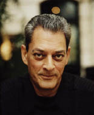

(1947 – )

Kimsenin kendini "Amerikalı" bile saymadığı New York'ta yaşayıp orayı tüm dünyaya anlatabilmek ve bu "Camdan Kent"in kuytularında yatan hikayeleri romanlarına yansıtabilmek kolay iş değil elbet. Üstelik bir yandan da Amerikan edebiyatını Fransızcaya ve Fransız edebiyatını İngilizceye çevirmekle uğraşırken...
Paul Auster (okunuşu: Pol Oğstır), 1947 yılında ABD'nin New Jersey kentinde doğdu. Babası Samuel Auster emlak zengini, Yahudi bir işadamıydı. Paul 3,5 yaşındayken dünyaya gelen kızkardeşinin yaşı ilerledikçe ağır sinir hastalıklarına tutulması, yazarın çocukluğu üzerinde derin etkiler bırakmıştır. Aile 1959 yılında büyük bir malikaneye taşınınca genç Auster, evin kitaplığında amcası çevirmen Allen Mandelbaum'un ona bıraktığı kitapları buldu ve o andan itibaren Paul'ün hayatı edebiyat ekseninde ilerlemeye başladı. Lise bitirme yıllarında Avrupa'ya gitme şansı bulan yazar, İtalya, İspanya, Fransa ve İrlanda'yı gezdi. 1967'den itibaren Columbia Üniversitesi'nde İngiliz, Fransız ve İtalyan edebiyatları üzerine eğitim alan Auster, 1971-1974 yılları arasında Fransa'da yaşadı. 1974 yılında Lydia Davis'le evlendi. Karı-koca birlikte Fransızca'dan çeviriler yaparken Paul de Amerikan dergilerine yazılar ve öyküler gönderiyordu. 1979 yılının ocak ayında yazarın babası Samuel Auster, oğluna hatırı sayılır bir servet bırakarak öldü ve sanatçı artık maddi sorunları düşünmeden, sadece sanatına yoğunlaşma şansını elde etti.
1980 başlarında yazar, Brooklyn'de bir daireye taşındı ve orada Anı Kitabı adlı romanı ve ileride çift dilde basılacak olan Yirminci Yüzyıl Fransız Şiiri adlı çeviri üzerinde çalışmaya başladı. Yine bu dairede yaşadığı bir olay, ona Camdan Kent adlı romanına başlama esinini verdi: Pinkerton Dedektiflik Ajansı'nı arayan biri sürekli yanlış numarayı çeviriyordu, çünkü aradığı numara Paul Auster'ın ev telefonunun numarasıydı! Aynı yıl Auster'ın ilk şiir kitabı Müzikle Yüzleşmek yayımlandı. Hemen ardından sanatçı, Yalnızlığın İcadı adlı ilk romanının birinci kısmını oluşturacak olan ve babasının ölümünü anlattığı Görünmeyen Bir Adamın Portresi adlı eserini tamamladı. 1981'de bir şiir okuma etkinliğinde tanıştığı Siri Hustvedt ile evlenen yazar, o yıllardan itibaren gittikçe düzyazıya, özellikle de romana ağırlık vermeye başladı. 1986-1990 yılları arasında Princeton Üniversitesi'nde okutman olarak ders verdi. 1989'da Ay Sarayı, 1990'da Şans Müziği romanlarını yazan Auster, o günlerde sinema endüstrisinin de dikkatini çekmeye başladı. 1992'de basılan Leviathan ve 1994'te yayımlanan Bay Vertigo romanlarının ardından Duman ve Suratı Mosmor adlı filmlerin senaryolarını yazan Paul Auster'ın bu senaryoları, yönetmen Wayne Wang tarafından filme çekildi. Köprüdeki Lulu adlı senaryosunu (1998) ise kendisi filme çekti. Paul Auster, 2006 yılında İspanya'nın saygın ödüllerinden olan Asturias Ödülü'nü edebiyat dalında kazandı.
Seçme Romanları: Yalnızlığın Keşfi (1982), New York Üçlemesi (1985-86), Leviathan (1992), Yükseklik Korkusu (1994), Kırmızı Defter (1995), Duman (1995), Yanılsamalar Kitabı (2002), Kehanet Gecesi (2003), Yazı Odasında Yolculuklar (2006), Karanlıktaki Adam (2008), Görünmeyen (2009)